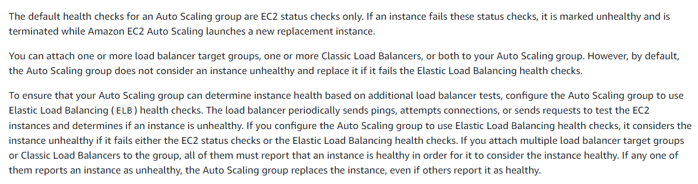

Auto scaling
Auto scaling is enabled by Amazon CloudWatch and is available at no additional charge beyond the service fees for CloudWatch and the other AWS resources that you use.
Scaling options
Maintain current instance levels at all times
You can configure your Auto Scaling group to maintain a specified number of running instances at all times. To maintain the current instance levels, Amazon EC2 Auto Scaling performs a periodic health check on running instances within an Auto Scaling group. When Amazon EC2 Auto Scaling finds an unhealthy instance, it terminates that instance and launches a new one. For more information, see Maintain a fixed number of instances in your Auto Scaling group.
Scale manually
Manual scaling is the most basic way to scale your resources, where you specify only the change in the maximum, minimum, or desired capacity of your Auto Scaling group. Amazon EC2 Auto Scaling manages the process of creating or terminating instances to maintain the updated capacity.
Scale based on a schedule
Scaling by schedule means that scaling actions are performed automatically as a function of time and date. This is useful when you know exactly when to increase or decrease the number of instances in your group, simply because the need arises on a predictable schedule.
When you create a scheduled action, you specify when the scaling activity should occur and the new desired, minimum, and maximum sizes for the scaling action. You can create scheduled actions that scale one time only or that scale on a recurring schedule.
Predictive scaling
Use predictive scaling to increase the number of EC2 instances in your Auto Scaling group in advance of daily and weekly patterns in traffic flows.
Dynamic scaling
A more advanced way to scale your resources, using dynamic scaling, lets you define a scaling policy that dynamically resizes your Auto Scaling group to meet changes in demand. For example, let's say that you have a web application that currently runs on two instances and you want the CPU utilization of the Auto Scaling group to stay at around 50 percent when the load on the application changes. This method is useful for scaling in response to changing conditions, when you don't know when those conditions will change. You can set up Amazon EC2 Auto Scaling to respond for you. Amazon EC2 Auto Scaling supports the following types of dynamic scaling policies: Target tracking scaling—Increase and decrease the current capacity of the group based on a Amazon CloudWatch metric and a target value. It works similar to the way that your thermostat maintains the temperature of your home—you select a temperature and the thermostat does the rest. Step scaling—Increase and decrease the current capacity of the group based on a set of scaling adjustments, known as step adjustments, that vary based on the size of the alarm breach. Simple scaling—Increase and decrease the current capacity of the group based on a single scaling adjustment, with a cooldown period between each scaling activity.
